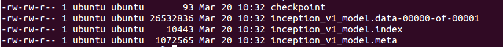

1. 什么是TensorFlow模型？
训练了一个神经网络之后，我们希望保存它以便将来使用。那么什么是TensorFlow模型? Tensorflow模型主要包含我们所培训的网络参数的网络设计或图形和值。因此，Tensorflow模型有两个主要的文件:
a) Meta graph：
这是一个协议缓冲区，它保存了完整的Tensorflow图形;即所有变量、操作、集合等。该文件以.meta作为扩展名。
b) Checkpoint file：
这是一个二进制文件，它包含了所有的权重、偏差、梯度和其他所有变量的值。这个文件有一个扩展名.ckpt。然而，Tensorflow从0.11版本中改变了这一点。现在，我们有两个文件，而不是单个.ckpt文件:
- model.ckpt.data-00000-of-00001
- model.ckpt.meta
.data文件是包含我们训练变量的文件，我们待会将会使用它。
与此同时，Tensorflow也有一个名为checkpoint的文件，它只保存的最新保存的checkpoint文件的记录。
因此，为了总结，对于大于0.10的版本，Tensorflow模型如下:

在0.11之前的Tensorflow模型仅包含三个文件:
- inception_v1.meta
- inception_v1.ckpt
- checkpoint
之后的Tensorflow模型包含多了一个文件
- model.ckpt.data-00000-of-00001
现在我们已经知道了Tensorflow模型的样子，接下来我们来看看TensorFlow是如何保存模型的。
2. 保存TensorFlow模型
比方说，你正在训练一个卷积神经网络来进行图像分类。作为一种标准的练习，你要时刻关注损失和准确率。一旦看到网络已经收敛，我们可以暂停模型的训练。在完成培训之后，我们希望将所有的变量和网络结构保存到一个文件中，以便将来使用。因此，在Tensorflow中，我们希望保存所有参数的图和值，我们将创建一个tf.train.Saver()类的实例。
1 | saver = tf.train.Saver() |
请记住，Tensorflow变量仅在会话中存在。因此，您必须在一个会话中保存模型，调用您刚刚创建的save方法。
1 | saver.save(sess, 'my-test-model') |
这里，sess是会话对象，而’my-test-model’是保存的模型的名称。让我们来看一个完整的例子:
1 | import tensorflow as tf |
如果我们在1000次迭代之后保存模型，我们将通过global_step来调用save:
1 | saver.save(sess, 'my_test_model',global_step=1000) |
这将会将’-1000’追加到模型名称，并创建以下文件:
- my_test_model-1000.index
- my_test_model-1000.meta
- my_test_model-1000.data-00000-of-00001
- checkpoint
比方说，在训练时，我们在每次1000次迭代后都保存模型，所以.meta文件是第一次创建的(在第1000次迭代中)，我们不需要每次都重新创建.meta文件(我们在2000，3000次没有保存.meta文件)。我们仅为进一步的迭代保存模型，因为图不会改变。因此，当我们不想保存meta-graph时，我们用这个:
1 | saver.save(sess, 'my-model', global_step=step,write_meta_graph=False) |
如果你希望仅保留4个最新的模型，并且希望在训练过程中每两个小时后保存一个模型，那么你可以使用max_to_keep和keep_checkpoint_every_n_hours这样做。
1 | #saves a model every 2 hours and maximum 4 latest models are saved. |
注意，如果我们在tf.train.Saver()中没有指定任何东西，它将保存所有的变量。如果，我们不想保存所有的变量，而只是一些变量。我们可以指定要保存的变量/集合。在创建tf.train。保护程序实例，我们将它传递给我们想要保存的变量的列表或字典。让我们来看一个例子:
1 | import tensorflow as tf |
这可以用于在需要时保存特定的Tensorflow图。
3. 导入训练好的模型
如果你想用别人预先训练好的模型来进行微调，你需要做以下两件事:
a)创建网络
你可以通过编写python代码创建网络，以手工创建每一层，并将其作为原始模型。但是，如果你考虑一下，我们已经在.meta文件中保存了这个网络，我们可以使用tf.train.import()函数来重新创建这个网络：
1 | saver = tf.train.import_meta_graph('my_test_model-1000.meta') |
记住，import_meta_graph将在.meta文件中定义的网络附加到当前图。因此，这将为你创建图形/网络，但是我们仍然需要加载我们在这张图上训练过的参数的值。
b)载入参数
我们可以通过调用这个保护程序的实例来恢复网络的参数，它是tf.train.Saver()类的一个实例。
1 | with tf.Session() as sess: |
在此之后，像w1和w2这样的张量的值已经恢复并且可以被访问:
直接用sess run 张量的名字， 可以通过张量的name属性获得名字比如w1.name
1 | with tf.Session() as sess: |
因此，现在你已经了解了如何为Tensorflow模型保存和导入工作。在下一节中，我描述了上面的实际使用，以加载任何预先训练过的模型。
4.使用导入的模型
现在你已经了解了如何保存和恢复Tensorflow模型，让我们开发一个实用的例子来恢复任何预先训练的模型，并·使用它进行预测、微调或进一步训练。当您使用Tensorflow时，你将定义一个图，该图是feed examples(训练数据)和一些超参数(如学习速率、迭代次数等)，它是一个标准的过程，我们可以使用占位符来存放所有的训练数据和超参数。接下来，让我们使用占位符构建一个小网络并保存它。注意，当网络被保存时，占位符的值不会被保存。
1 | import tensorflow as tf |
现在，当我们想要恢复它时，我们不仅要恢复图和权重，还要准备一个新的feed_dict，它将把新的训练数据输入到网络中。我们可以通过graph.get_tensor_by_name()方法来引用这些保存的操作和占位符变量。
1 | #How to access saved variable/Tensor/placeholders |
如果我们只是想用不同的数据运行相同的网络，您可以简单地通过feed_dict将新数据传递给网络。
1 | import tensorflow as tf |
如果你希望通过添加更多的层数并对其进行训练，从而向图中添加更多的操作，可以这样做
1 | import tensorflow as tf |
但是，你是否可以在之前图的结构上构建新的网络?当然，您可以通过graph.get_tensor_by_name()方法访问适当的操作，并在此基础上构建图。这是一个真实的例子。在这里，我们使用元图加载一个vgg预训练的网络，并在最后一层中将输出的数量更改为2，以便对新数据进行微调。
1 | saver = tf.train.import_meta_graph('vgg.meta') |
希望这能让你清楚地了解如何保存和恢复Tensorflow模型。
原文链接：http://cv-tricks.com/tensorflow-tutorial/save-restore-tensorflow-models-quick-complete-tutorial/